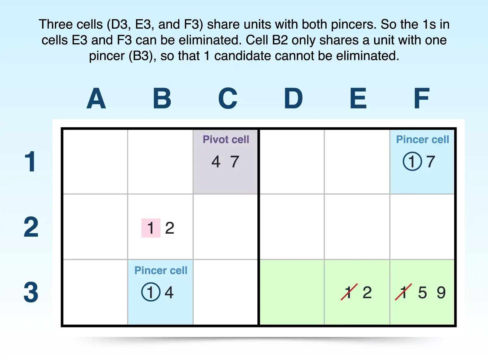
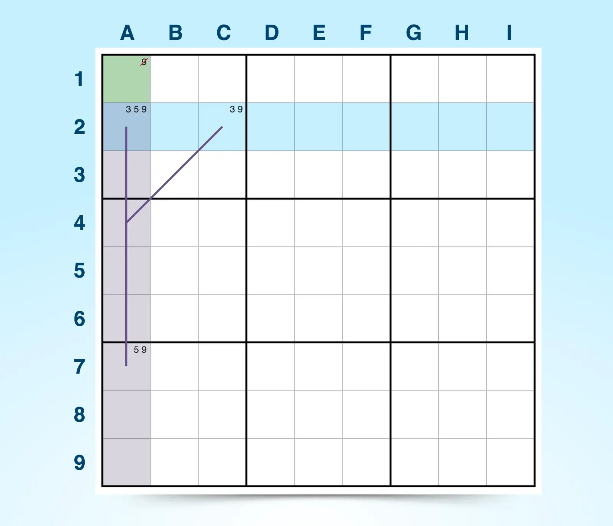
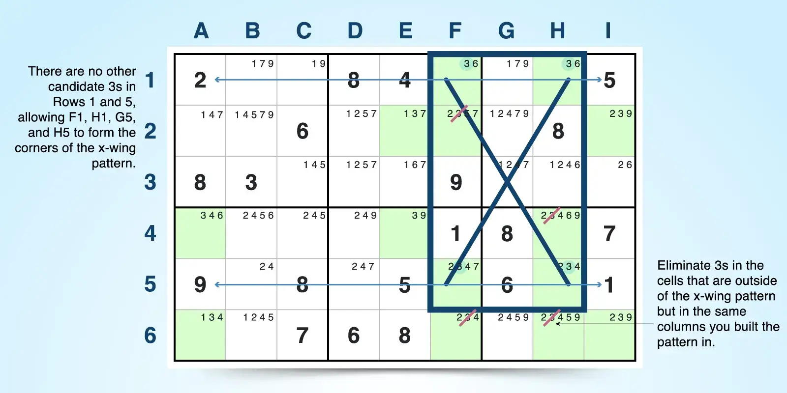
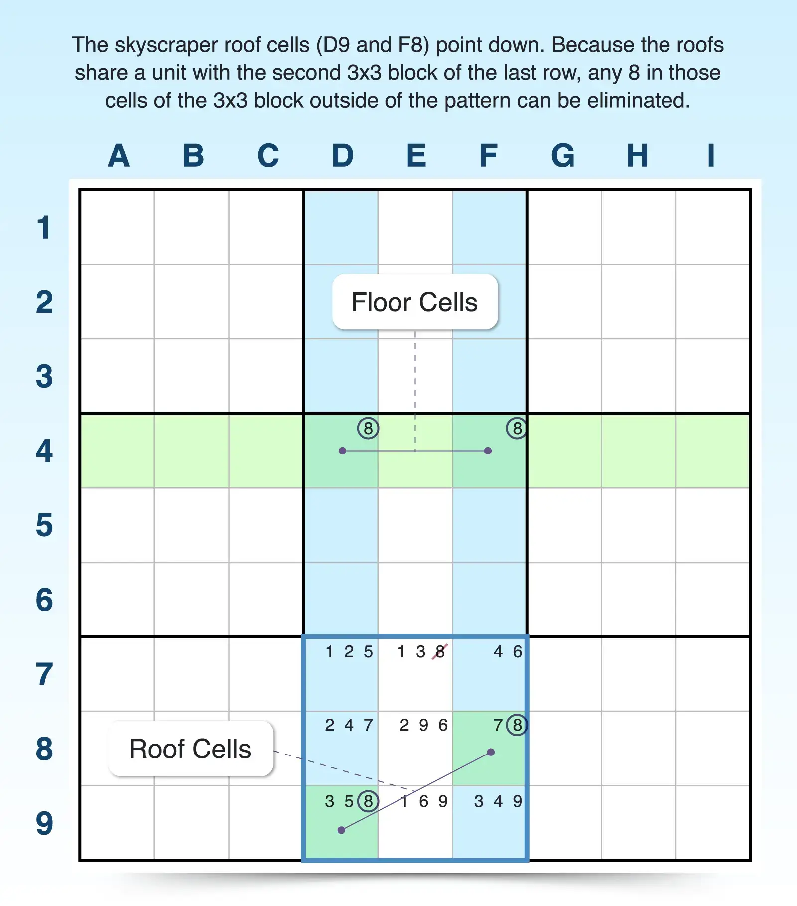
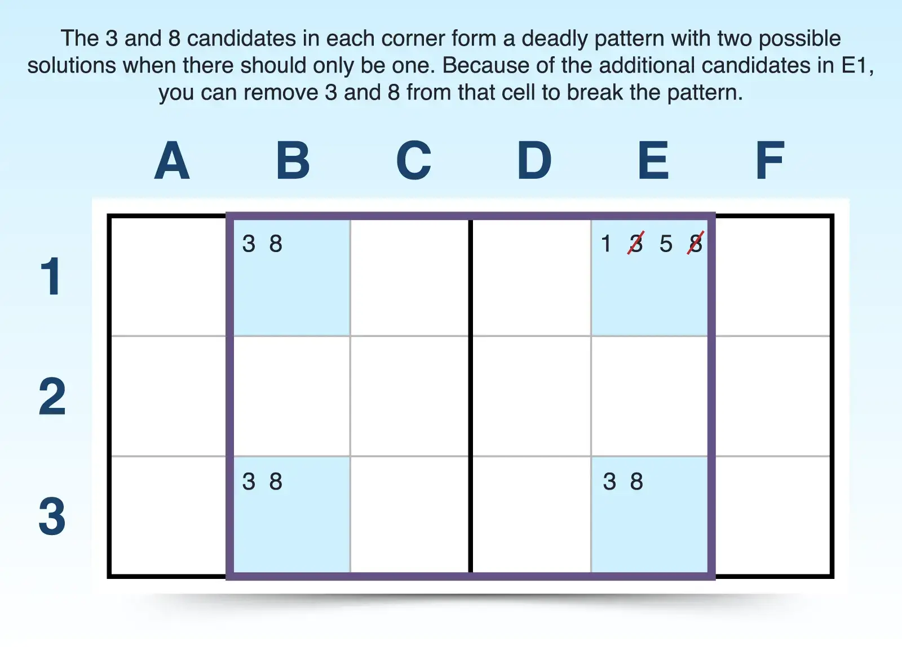
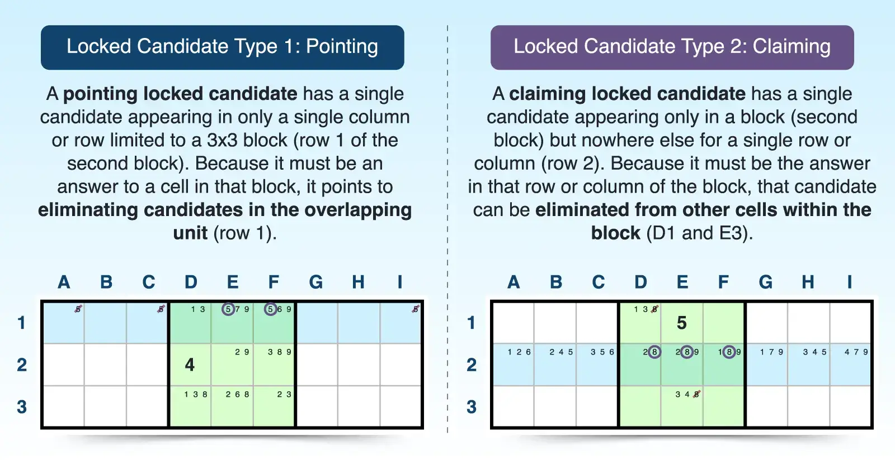
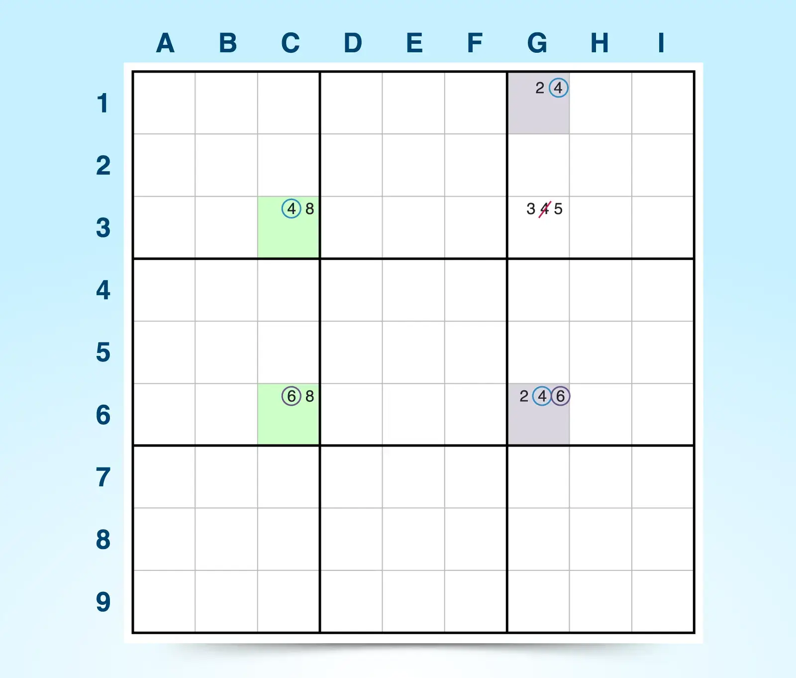
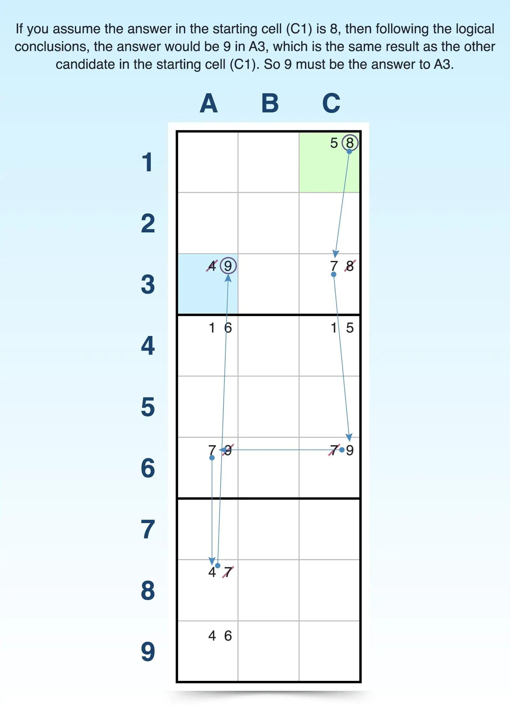
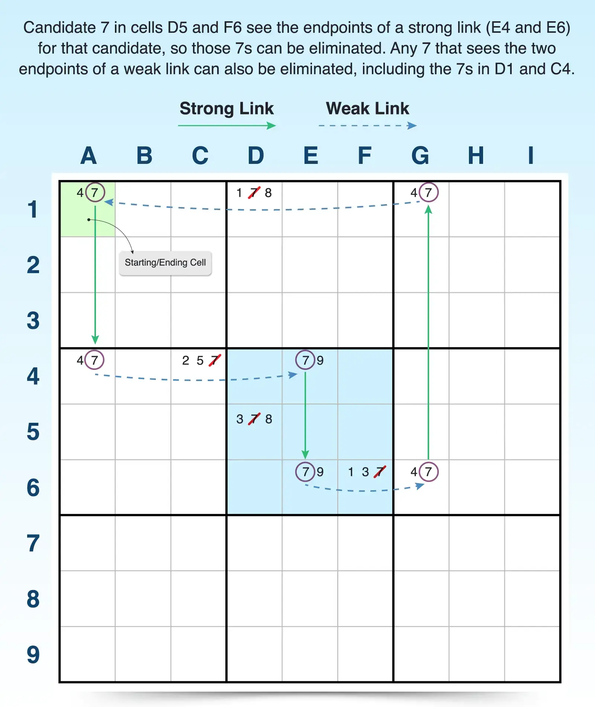

Observações:
EXPLORANDO MAIS SOBRE OUTRAS:
Estratégia W-wing - A estratégia W-wing é uma técnica de eliminação que combina duas células bivaloradas não interativas com os mesmos candidatos, conectadas por uma ligação forte (par conjugado), para forçar um resultado lógico. Como a configuração é fácil de identificar, você pode usar essa estratégia no meio da resolução ou até mesmo mais tarde no processo.
 Para encontrar uma asa em W:
Encontre duas células bivaloradas que contenham os mesmos dois candidatos (x e y). Essas duas células bivaloradas não devem se enxergar, ou seja, não devem compartilhar a mesma linha, coluna ou bloco. Por exemplo, A2 e I8 são células bivaloradas que compartilham os mesmos dois candidatos (3, 7), mas não compartilham uma unidade (linha, coluna ou bloco).
Procure por uma ligação forte (um par conjugado) para um dos candidatos (x). Uma ligação forte existe se um candidato (x) aparece apenas duas vezes em uma unidade (linha, coluna ou bloco). Por exemplo, o candidato 3 aparece apenas em E2 e E8 para a coluna E, criando uma ligação forte.
Confirme se as duas células fortemente ligadas enxergam apenas uma das células bivaloradas cada uma. As duas células fortemente ligadas atuam como uma ponte entre as duas células bivaloradas, mas não precisam criar ligações fortes com as células bivaloradas. Elas só precisam enxergar uma das células bivaloradas cada uma. Por exemplo, a célula de ligação forte E2 vê apenas A2, e a célula de ligação forte E8 vê apenas I8.
Elimine o candidato y das células que veem ambas as células bivaloradas. Se as condições forem atendidas, o candidato y pode ser eliminado de qualquer célula que veja ambas as células bivaloradas, porque esse candidato deve ser a resposta em uma das células bivaloradas. Por exemplo, I2 contém o candidato 7, o candidato y das células bivaloradas, e como vê A2 e I8, o 7 pode ser eliminado.
Asa XY (Asa Y) - A Asa Y (ou Asa XY) é uma técnica de eliminação que utiliza uma cadeia de inferência entre três células bivaloradas que compartilham três candidatos. Nessa estratégia, as asas são chamadas de pinças e, como ambas as pinças enxergam a célula pivô, mas não uma à outra, é possível eliminar um candidato se determinadas condições forem atendidas.
Para encontrar uma asa em W:
Encontre duas células bivaloradas que contenham os mesmos dois candidatos (x e y). Essas duas células bivaloradas não devem se enxergar, ou seja, não devem compartilhar a mesma linha, coluna ou bloco. Por exemplo, A2 e I8 são células bivaloradas que compartilham os mesmos dois candidatos (3, 7), mas não compartilham uma unidade (linha, coluna ou bloco).
Procure por uma ligação forte (um par conjugado) para um dos candidatos (x). Uma ligação forte existe se um candidato (x) aparece apenas duas vezes em uma unidade (linha, coluna ou bloco). Por exemplo, o candidato 3 aparece apenas em E2 e E8 para a coluna E, criando uma ligação forte.
Confirme se as duas células fortemente ligadas enxergam apenas uma das células bivaloradas cada uma. As duas células fortemente ligadas atuam como uma ponte entre as duas células bivaloradas, mas não precisam criar ligações fortes com as células bivaloradas. Elas só precisam enxergar uma das células bivaloradas cada uma. Por exemplo, a célula de ligação forte E2 vê apenas A2, e a célula de ligação forte E8 vê apenas I8.
Elimine o candidato y das células que veem ambas as células bivaloradas. Se as condições forem atendidas, o candidato y pode ser eliminado de qualquer célula que veja ambas as células bivaloradas, porque esse candidato deve ser a resposta em uma das células bivaloradas. Por exemplo, I2 contém o candidato 7, o candidato y das células bivaloradas, e como vê A2 e I8, o 7 pode ser eliminado.
Asa XY (Asa Y) - A Asa Y (ou Asa XY) é uma técnica de eliminação que utiliza uma cadeia de inferência entre três células bivaloradas que compartilham três candidatos. Nessa estratégia, as asas são chamadas de pinças e, como ambas as pinças enxergam a célula pivô, mas não uma à outra, é possível eliminar um candidato se determinadas condições forem atendidas.

Para encontrar o padrão em Y:
Identifique uma célula pivô bivalorada com candidatos (x, y). Por exemplo, C1 tem apenas dois candidatos (4, 7).
Encontre a primeira célula de pinça com candidatos (x, z). Esta célula bivalorada deve conter um candidato da célula pivô, um segundo candidato não compartilhado com a célula pivô e deve compartilhar uma unidade com a célula pivô. Por exemplo, B3 está no mesmo bloco que C3 e compartilha o candidato 4, mas B3 tem apenas um outro candidato (1) que não é compartilhado com C1.
Encontre a segunda célula de pinça com candidatos (y, z). Esta célula bivalorada deve compartilhar o outro candidato da célula pivô e compartilhar um segundo candidato com a célula de pinça. Esta segunda célula de pinça também compartilha uma unidade com a célula pivô, mas não pode compartilhar uma unidade com a primeira célula de pinça. Por exemplo, F1 compartilha uma linha e o candidato 7 com C3 (pivô). Também compartilha um segundo candidato (1) com B3 (pinça), mas não compartilha uma unidade com B3.
Elimine o candidato z de quaisquer células que vejam ambas as células da pinça. Devido à relação de ligação entre as três células de dois valores, o candidato z deve ser a resposta em uma das células da pinça, e quaisquer células que vejam ambas as pinças podem remover o candidato z. Por exemplo, as pinças veem D3, E3 e F3, portanto, 1 não pode ser uma resposta nessas células e pode ser eliminado de E3 e F3.
As asas em Y podem oferecer muitas células para eliminação ou apenas uma única célula, dependendo da proximidade das células da pinça. Quanto mais distantes as pinças estiverem, menos células você poderá procurar para eliminação. Mas eliminar um único número geralmente pode desbloquear um quebra-cabeça difícil que você estava tentando resolver. Portanto, não ignore essa estratégia se as pinças estiverem muito distantes.
Asa XYZ
A técnica XYZ-wing adiciona um novo candidato à célula pivô da estratégia XY-wing. Em vez de usar três células bivaloradas, essa estratégia utiliza uma célula pivô com três candidatos (x, y e z) e duas células de pinça bivaloradas (asas) que compartilham subconjuntos de candidatos da célula pivô.
Esse padrão cria uma armadilha lógica onde um candidato deve ser verdadeiro, permitindo eliminar um candidato compartilhado entre as células que visualizam os três. Como a eliminação depende de uma célula visualizar todas as três células na estratégia XYZ-wing, essa é uma eliminação mais restrita, mas, como em outras estratégias, uma eliminação pode levar a uma cascata de outras.

Para encontrar uma asa XYZ:
Encontre uma célula pivô com três candidatos (x, y e z). A célula pivô é semelhante à asa XY, exceto que agora inclui um terceiro candidato, o candidato compartilhado pelas células pinça. Por exemplo, A2 tem os candidatos 3, 5 e 9.
Encontre uma célula pinça que veja o pivô e contenha dois candidatos compartilhados (x, z). Essa célula bivalorada deve conter dois candidatos da célula pivô e ver a célula pivô. Por exemplo, A7 está na mesma coluna que A2 e tem dois dos três candidatos (5, 9) contidos em A2.
Encontre uma segunda célula pinça que veja o pivô e contenha outros dois candidatos compartilhados (y, z). Essa célula bivalorada deve compartilhar um candidato diferente com a célula pivô do que a primeira célula pinça compartilhou, e também deve compartilhar um candidato com a célula pinça. Essa segunda célula pinça deve compartilhar uma unidade com a célula pivô, mas não com a outra célula pinça. Por exemplo, C2 está no mesmo bloco que A2 e contém os candidatos 3 e 9.
Elimine o candidato z de qualquer célula que veja todas as três células. Ao contrário da asa XY, o candidato z só pode ser eliminado de células que veem ambas as pinças e a célula pivô, tornando esta uma técnica de asa mais restritiva. Por exemplo, a única célula que todas as pinças e a célula pivô veem é A1. Portanto, o candidato 9 pode ser eliminado de A1.
Assim como na asa XY, quanto mais próximas as três células da asa XYZ estiverem, mais oportunidades você terá para eliminar candidatos.
Estratégias de Sudoku com Padrões e Padrões de Peixe - Essas técnicas baseadas em padrões dependem da posição das células de um único candidato em linhas e colunas para realizar eliminações. Alguns jogadores de Sudoku se referem a elas como padrões de peixe ou "padrões de peixe" porque seus formatos de grade complexos criam redes para aprisionar candidatos dentro de um padrão e forçar eliminações.
Ao lidar com padrões de peixe, é útil entender o seguinte:
Conjuntos base: Linhas ou colunas onde o candidato aparece.
Conjuntos de cobertura: Colunas ou linhas que se sobrepõem aos conjuntos base, onde o candidato também aparece
Os conjuntos base contêm fortes ligações, o que lhe dá a vantagem necessária nesses padrões para eliminar candidatos. Como um candidato deve aparecer pelo menos uma vez em um conjunto base e apenas no conjunto de cobertura, a lógica sugere que a sobreposição entre os conjuntos base e de cobertura é onde o candidato deve aparecer. Assim, você pode eliminar células nos conjuntos de cobertura que não fazem parte dos conjuntos base, e as seções seguintes detalham como cada padrão funciona.
X-Wing - A técnica X-Wing funciona como uma rede perfeitamente simétrica que ajuda a eliminar candidatos fora de seu padrão de quatro células, cada uma contendo o mesmo candidato, formando um retângulo. Seu nome representa o X que você pode formar conectando as quatro células em pares diagonais e porque você usa um único candidato (x) para criar o padrão.
Você precisa do seguinte para construir um X-Wing:
Dois conjuntos base: Duas linhas (ou duas colunas) nas quais o mesmo número (candidato x) aparece em exatamente duas células em cada linha (ou coluna).
Dois conjuntos de cobertura: Duas colunas (ou linhas, se os conjuntos base forem colunas) que se sobrepõem aos conjuntos base, sobrepondo-se nas células específicas em que os dois candidatos aparecem. Os conjuntos de cobertura também podem ter outras instâncias do candidato alvo na unidade, mas elas se sobreporão ao candidato alvo do conjunto base.
Como o candidato deve ocupar uma das células em cada conjunto base, você pode eliminar esse candidato de quaisquer outras células dentro dos conjuntos de cobertura, exceto as quatro células que criam o padrão X-Wing.

As asas em forma de X podem ser orientadas na horizontal ou na vertical, dependendo de seus conjuntos de base. Conjuntos de base em linhas criam asas em forma de X horizontais, e conjuntos de base em colunas criam asas em forma de X verticais.
Para encontrar uma asa em forma de X horizontal:
Selecione um único candidato. Escolha um candidato que apareça com frequência no quebra-cabeça. Por exemplo, o candidato 3 aparece com frequência.
Procure dois conjuntos de base. Verifique se o candidato selecionado aparece exatamente duas vezes em duas linhas. Nas linhas 1 e 5, o candidato 3 aparece apenas duas vezes em F1 e H1 e em F5 e H5.
Confirme se dois conjuntos de cobertura se sobrepõem aos conjuntos de base. Se o candidato selecionado aparecer exatamente duas vezes em duas linhas, verifique se essas ocorrências se concentram em apenas duas colunas. O candidato 3 aparece apenas duas vezes nas linhas 1 e 5, e essas ocorrências se concentram em duas colunas (F e H).
Elimine o candidato x das células nos conjuntos de cobertura que estão fora do padrão. Se você encontrou um X-wing, pode eliminar o candidato alvo de qualquer célula dentro das duas colunas do conjunto de capa, desde que não seja uma das quatro células que formam o padrão. Por exemplo, o número 3 pode ser encontrado em outras células nas colunas F e H fora do padrão de quatro células. Portanto, o candidato 3 pode ser eliminado das células F2, F6 e H6.
Para encontrar um X-wing vertical, siga os mesmos passos descritos acima, mas use colunas para conjuntos de base e linhas para conjuntos de capa.
5. Espada-de-água-doce - A técnica da espada-de-água-doce estende a técnica do X-wing. Em vez de usar duas linhas e duas colunas, ela funciona com três linhas e três colunas, e a técnica da água-viva estende-se para quatro linhas e quatro colunas. A estratégia da espada-de-água-doce utiliza o seguinte:
Três conjuntos base: Três linhas (ou três colunas) nas quais o mesmo número (candidato x) aparece em exatamente duas ou três células em cada linha (ou coluna). A estratégia da espada-de-água-doce não exige que o candidato apareça três vezes em cada unidade dos conjuntos base, mas ele deve aparecer pelo menos duas vezes e no máximo três vezes.
Três conjuntos de cobertura: Os conjuntos de cobertura fazem a diferença na estratégia da espada-de-água-doce. Você precisa de três colunas (ou três linhas, se os conjuntos base forem colunas) para sobrepor os conjuntos base. Os conjuntos de cobertura devem se sobrepor nas células específicas em que os candidatos aparecem e podem conter outras instâncias do candidato alvo.
Como o candidato deve estar em algum lugar nas células onde os conjuntos base e de cobertura se sobrepõem, você pode remover o candidato de quaisquer outras células nos conjuntos de cobertura fora das células sobrepostas que criam o padrão da espada-de-água-doce.
 Assim como as asas-X, os padrões de espadarte podem ser orientados na horizontal (conjuntos base são linhas) ou na vertical (conjuntos base são colunas). Para encontrar um espadarte horizontal:
Selecione um único candidato. Este padrão requer fortes ligações entre um único candidato, portanto, procure um que apareça com frequência, mas que esteja além do padrão de asa-X. O exemplo abaixo se concentra no candidato 4.
Procure três conjuntos base. Verifique se o candidato selecionado aparece exatamente duas ou três vezes em três linhas. Por exemplo, o número 4 aparece exatamente duas vezes na linha 2, três vezes na linha 4 e duas vezes na linha 6, formando conjuntos base.
Confirme três conjuntos de cobertura. Para garantir um padrão de espadarte, o candidato selecionado nas três linhas deve aparecer em apenas três colunas (estar restrito a apenas três colunas). Verifique se apenas três colunas se sobrepõem às células específicas em que o candidato selecionado aparece nos três conjuntos base. Lembre-se de que os conjuntos de cobertura podem ter outras instâncias do candidato selecionado, mas devem se sobrepor aos conjuntos base. Por exemplo, as colunas B, D e E se sobrepõem às linhas 2, 4 e 6, onde o candidato 4 aparece, criando conjuntos de cobertura para completar o padrão espadarte.
Elimine o candidato alvo das células dos conjuntos de cobertura que estão fora do padrão. Por exemplo, qualquer 4 nas colunas B, D e E que não esteja nas linhas 2, 4 e 6 pode ser eliminado.
Você encontra um padrão espadarte vertical da mesma forma, exceto que os conjuntos base são colunas e os conjuntos de cobertura são linhas. As linhas sobrepostas formam conjuntos de cobertura, de modo que qualquer candidato nessas linhas, excluindo as células do padrão, pode ser eliminado.
Arranha-céu - A estratégia do arranha-céu é semelhante à do X-wing, pois utiliza quatro células. No entanto, essa estratégia de eliminação baseada em padrões exige que as quatro células apareçam da seguinte forma:
Em duas colunas (ou linhas) diferentes.
Com um único candidato aparecendo apenas duas vezes em cada coluna.
Com duas células alinhadas exatamente em uma linha para formar o piso.
Com as outras duas células aparecendo em duas linhas diferentes para formar o telhado inclinado.
Embora as quatro células apareçam dessa forma, você também pode se referir a esse padrão usando conjuntos base e conjuntos de cobertura:
Conjuntos base: As duas colunas (ou linhas) onde o candidato aparece exatamente duas vezes, estabelecendo uma forte ligação.
Conjuntos de cobertura: As três linhas (ou colunas) sobrepostas que estabelecem as células do piso na mesma linha e as células do telhado em duas linhas diferentes.
Ao analisar a interseção e o alinhamento dessas células, você pode determinar que o candidato deve existir em uma das duas células do telhado, permitindo que você o elimine de qualquer célula que veja ambas.
Assim como as asas-X, os padrões de espadarte podem ser orientados na horizontal (conjuntos base são linhas) ou na vertical (conjuntos base são colunas). Para encontrar um espadarte horizontal:
Selecione um único candidato. Este padrão requer fortes ligações entre um único candidato, portanto, procure um que apareça com frequência, mas que esteja além do padrão de asa-X. O exemplo abaixo se concentra no candidato 4.
Procure três conjuntos base. Verifique se o candidato selecionado aparece exatamente duas ou três vezes em três linhas. Por exemplo, o número 4 aparece exatamente duas vezes na linha 2, três vezes na linha 4 e duas vezes na linha 6, formando conjuntos base.
Confirme três conjuntos de cobertura. Para garantir um padrão de espadarte, o candidato selecionado nas três linhas deve aparecer em apenas três colunas (estar restrito a apenas três colunas). Verifique se apenas três colunas se sobrepõem às células específicas em que o candidato selecionado aparece nos três conjuntos base. Lembre-se de que os conjuntos de cobertura podem ter outras instâncias do candidato selecionado, mas devem se sobrepor aos conjuntos base. Por exemplo, as colunas B, D e E se sobrepõem às linhas 2, 4 e 6, onde o candidato 4 aparece, criando conjuntos de cobertura para completar o padrão espadarte.
Elimine o candidato alvo das células dos conjuntos de cobertura que estão fora do padrão. Por exemplo, qualquer 4 nas colunas B, D e E que não esteja nas linhas 2, 4 e 6 pode ser eliminado.
Você encontra um padrão espadarte vertical da mesma forma, exceto que os conjuntos base são colunas e os conjuntos de cobertura são linhas. As linhas sobrepostas formam conjuntos de cobertura, de modo que qualquer candidato nessas linhas, excluindo as células do padrão, pode ser eliminado.
Arranha-céu - A estratégia do arranha-céu é semelhante à do X-wing, pois utiliza quatro células. No entanto, essa estratégia de eliminação baseada em padrões exige que as quatro células apareçam da seguinte forma:
Em duas colunas (ou linhas) diferentes.
Com um único candidato aparecendo apenas duas vezes em cada coluna.
Com duas células alinhadas exatamente em uma linha para formar o piso.
Com as outras duas células aparecendo em duas linhas diferentes para formar o telhado inclinado.
Embora as quatro células apareçam dessa forma, você também pode se referir a esse padrão usando conjuntos base e conjuntos de cobertura:
Conjuntos base: As duas colunas (ou linhas) onde o candidato aparece exatamente duas vezes, estabelecendo uma forte ligação.
Conjuntos de cobertura: As três linhas (ou colunas) sobrepostas que estabelecem as células do piso na mesma linha e as células do telhado em duas linhas diferentes.
Ao analisar a interseção e o alinhamento dessas células, você pode determinar que o candidato deve existir em uma das duas células do telhado, permitindo que você o elimine de qualquer célula que veja ambas.

O arranha-céu é uma técnica poderosa porque pode ser formado em todas as direções. Assim, o piso pode ser formado em fileiras com o telhado apontando para a esquerda ou para a direita, ou o piso pode ser formado em colunas com o telhado apontando para cima ou para baixo.
Para encontrar um arranha-céu vertical:
Encontre duas colunas onde um candidato aparece exatamente duas vezes. Você precisa de uma ligação forte em cada coluna para que o candidato só possa aparecer duas vezes. Por exemplo, o candidato 8 pode ser encontrado exatamente duas vezes na coluna D e duas vezes na coluna F, criando uma ligação forte para o 8 em cada coluna.
Verifique se há uma linha compartilhada (o piso). Se uma célula de cada coluna compartilhar uma linha, você tem um piso plano e uniforme para o seu arranha-céu. Neste exemplo, os 8s nas colunas D e F se alinham na linha 4, criando um piso.
Identifique duas células de telhado em outras duas linhas. Agora verifique as outras duas ocorrências do candidato 8 em cada coluna. Se elas estiverem em linhas diferentes, você tem um arranha-céu. Por exemplo, o candidato 8 aparece na linha 8 da coluna F e na linha 9 da coluna D, criando a linha do telhado inclinada. Portanto, este arranha-céu é vertical, mas apontando para baixo.
Elimine qualquer candidato que veja ambas as células do telhado. Como você já estabeleceu o padrão, pode eliminar qualquer candidato 8 que veja ambas as células. Neste exemplo, como as células do telhado compartilham um bloco 3x3, qualquer 8 nesse bloco (E7), exceto as células do telhado, pode ser eliminado.
Para encontrar um arranha-céu horizontal, você segue a mesma técnica, apenas troca linhas por colunas e colunas por linhas. Você ainda usará quatro células, mas nesta orientação, encontrará duas linhas onde um candidato aparece exatamente duas vezes. Assim, as duas células do piso aparecerão em apenas duas linhas e estarão alinhadas em uma coluna, e as células do telhado aparecerão nas mesmas duas linhas, mas em colunas diferentes.
Técnicas avançadas de Sudoku baseadas em Conjuntos
As estratégias baseadas em conjuntos focam nas relações lógicas entre os conjuntos de candidatos. Ao contrário das estratégias de asas e peixes, elas podem não conter padrões específicos, mas dependem de como os candidatos são agrupados, seja dentro de unidades (como candidatos bloqueados) ou em estruturas especiais (como Retângulos Únicos ou ALS). São ferramentas poderosas quando você não consegue encontrar eliminações por meio de padrões ou cadeias mais simples.
Ao trabalhar com essas técnicas, tenha em mente estes conceitos fundamentais:
O princípio da impossibilidade: Essas estratégias se baseiam na premissa de que cada quebra-cabeça de Sudoku tem uma solução única. Se a colocação de um candidato criar ambiguidade ou uma contradição lógica, ele pode ser eliminado com segurança.
Restrições: Essas técnicas dependem da identificação de padrões estritamente restritos — como colocações limitadas dentro de uma unidade — e de como essas colocações afetam ou interagem com outros candidatos na grade.
Retângulo Único - A estratégia do retângulo único impede que um quebra-cabeça tenha mais de uma solução válida. Ela visa padrões onde quatro células formam um retângulo contendo apenas dois candidatos. Se nenhuma ação for tomada, essas células poderiam permitir duas soluções — portanto, você deve eliminar os candidatos que causariam essa ambiguidade.

Para encontrar um retângulo único:
Encontre duas células na mesma linha (ou coluna) que compartilhem os mesmos dois candidatos. As duas células podem ter outros candidatos, e os dois candidatos em questão podem aparecer em outras posições na unidade (linha ou coluna). Por exemplo, 3 e 8 aparecem juntos nas células B1 e E1. Esse par de candidatos aparece na mesma linha (1).
Encontre outra linha (ou coluna) com o mesmo par de candidatos, aparecendo na mesma posição. Depois de identificar um par que aparece duas vezes em uma linha, procure por duas ocorrências do mesmo par de candidatos e certifique-se de que elas estejam alinhadas nas mesmas colunas (ou linhas) que as outras duas células. Por exemplo, o par (3, 8) também aparece na linha 3 e está nas mesmas colunas (B e E) que na linha 1. Esse par forma os quatro cantos de um retângulo.
Confirme se as quatro células estão em apenas dois blocos de 3x3. Para que essa estratégia funcione, as células só podem estar em dois blocos de 3x3. Elas não podem se espalhar além desses dois blocos. Neste caso, as linhas 1 e 3 e as colunas B e E estão dentro de apenas dois blocos da grade.
Você acaba com um quebra-cabeça inválido quando todas as quatro células que contêm apenas dois candidatos formam um "retângulo mortal", porque os quebra-cabeças de Sudoku só podem ter uma solução. Portanto, você precisa de uma maneira de quebrar o padrão e fazer eliminações, e o Sudoku tem cinco tipos de retângulos exclusivos. Cada tipo oferece maneiras diferentes de quebrar o padrão.
Candidatos Bloqueados - Quando você encontra um candidato restrito a linhas, colunas ou blocos sobrepostos, você pode usar a estratégia de candidatos bloqueados para eliminá-los. Também chamada de apontar e reivindicar candidatos, essa técnica usa unidades sobrepostas (linhas, colunas e blocos) para restringir um candidato a apenas uma unidade, permitindo que você o elimine do quebra-cabeça.
Você pode encontrar dois tipos diferentes de candidatos bloqueados:
Apontar: Quando um candidato aparece apenas em uma linha ou coluna dentro de um bloco, ele deve estar nessa linha/coluna dentro desse bloco sobreposto. Portanto, você pode removê-lo dessa linha/coluna fora do bloco.
Reivindicar: Quando um candidato aparece apenas em um bloco dentro de uma linha ou coluna, ele deve estar nesse bloco — portanto, você pode removê-lo do restante do bloco.

Para encontrar um candidato que aponta para a resposta correta:
Procure em cada bloco um candidato que apareça apenas em uma linha ou coluna desse bloco. As unidades sobrepostas são essenciais para encontrar um candidato bloqueado. Por exemplo, no segundo bloco, o candidato 5 aparece apenas na linha 1.
Elimine o candidato que está fora do bloco. Como o candidato 5 deve ser colocado nessa linha dentro da caixa, você pode eliminá-lo de outras células na linha 1 fora da segunda caixa.
Para encontrar um candidato que reivindica a resposta correta, basta procurar em cada linha ou coluna um candidato que apareça apenas em uma caixa ao longo dessa linha. Por exemplo, o candidato 8 aparece apenas na segunda caixa da linha 2. Como ele aparece apenas nessa caixa nessa linha, ele deve ser a resposta onde essas duas unidades se sobrepõem, então você pode eliminar o candidato 8 de outras células na segunda caixa fora daquelas na linha 2.
LS-XZ - A técnica ALS-XZ é uma estratégia avançada de Sudoku baseada na interação de dois conjuntos quase bloqueados (ALS). Se as seguintes condições forem verdadeiras, você poderá eliminar o candidato z de outras células fora dos ALSs:
Você tem dois ALSs. Um ALS é um grupo de células que possui apenas um candidato possível a mais do que células no grupo (N células com N+1 candidatos).
Ambos os ALSs compartilham o candidato restrito (x).
Este candidato deve aparecer apenas uma vez em cada conjunto.
As células que contêm x devem estar presentes umas nas outras.
Ambos os ALSs compartilham o candidato irrestrito comum (Z). Este candidato é encontrado em ambos os conjuntos, mas não está restrito a ser uma resposta em nenhum deles.
Para eliminar o candidato z, o seguinte deve ser verdadeiro para z:
Aparece em uma célula fora dos dois conjuntos quase bloqueados.
Está presente em todas as ocorrências do candidato z em ambos os conjuntos.

Para encontrar eliminações com ALS-XZ:
Identifique dois conjuntos quase bloqueados. Para encontrar um ALS, procure um grupo de células (N) que tenha apenas um candidato possível a mais do que o número de células. Por exemplo, a coluna C tem um conjunto quase bloqueado (ALS 1) com três candidatos possíveis (4, 6 e 8) em apenas duas células. A coluna G tem outro conjunto bloqueado (ALS 2) com três candidatos possíveis (2, 4 e 6) em apenas duas células.
Encontre um candidato comum restrito (x). O candidato comum restrito deve aparecer apenas uma vez em cada ALS e as células que contêm o candidato restrito devem estar adjacentes umas às outras. Por exemplo, o ALS 1 tem o candidato 6 na célula C6 e o ALS 2 tem o mesmo candidato 6 na célula G6. C6 e G6 compartilham uma linha e aparecem apenas uma vez em cada ALS, tornando 6 o candidato comum restrito.
Verifique se há um candidato comum irrestrito compartilhado (z). O candidato comum irrestrito não está restrito a uma única célula, o que significa que ele pode aparecer mais de uma vez em cada ALS, e as células em cada ALS que contêm o candidato irrestrito não precisam se ver. Embora 4 apareça apenas uma vez no ALS 1 em C3, o candidato 4 aparece duas vezes no ALS 2 em G1 e G6. Como nenhuma das células com o candidato 4 se vê, ambos os ALSs compartilham um candidato irrestrito comum (4).
Elimine z das células fora dos ALSs que veem todas as instâncias de z dentro dos ALSs. Se o conjunto satisfizer todos os requisitos, você pode eliminar qualquer instância de z quando ela aparecer fora de cada ALS e puder ver todas as células em que z aparece dentro dos ALSs. Por exemplo, você pode eliminar o 4 em G3 porque G3 compartilha uma coluna com G1 e G6 e compartilha uma linha com C3 — G3 pode ver todas as instâncias do candidato 4 em ambos os ALSs.
Assim como em muitas estratégias avançadas, quanto mais próximas as células necessárias estiverem umas das outras, mais oportunidades você terá de eliminação devido às unidades sobrepostas.
Estratégias avançadas de Sudoku baseadas em cadeias - As técnicas de cadeia constroem cadeias lógicas conectando candidatos por meio de inferências fortes e fracas, frequentemente abrangendo múltiplas células e unidades. Isso inclui Cadeias Forçadas, Ciclos X e AICs, onde cada ligação carrega uma condição ("se isto for falso, aquilo deve ser verdadeiro"). As estratégias baseadas em cadeias podem eliminar candidatos ou até mesmo confirmar uma verdade (veracidade) por meio de sua lógica.
Cadeias de Implicações - As cadeias de implicações usam a lógica condicional (se-então) para explorar as consequências a partir de um ponto de partida presumido, sendo o mais simples uma célula binária. Basta construir uma cadeia de implicações (se A for verdadeiro, então B deve ser falso, e assim por diante) e seguir as respostas para verificar se é possível confirmar ou eliminar candidatos.

Para usar a técnica de cadeias de força:
Comece com uma célula binária. A maneira mais fácil de iniciar essa estratégia é escolher uma célula com apenas dois candidatos. Por exemplo, C1 tem dois candidatos (5, 8).
Siga a cadeia lógica do primeiro candidato. Selecione um candidato para começar e, em seguida, rastreie as conclusões nas outras células. Por exemplo, se 5 for a resposta para C1, então C4 deve ser 1; A4 deve ser 6; A9 deve ser 4; e A3 deve ser 9.
Siga a cadeia lógica para os candidatos restantes na célula inicial. Você precisa descobrir se todos os candidatos levam à mesma conclusão. Portanto, se C1 for 8, então C3 deve ser 7; C6 deve ser 9; A6 deve ser 7; A8 deve ser 4; e A3 deve ser 9.
Compare os resultados. Os resultados direcionam seu próximo movimento no quebra-cabeça, seja para confirmar ou eliminar candidatos. Como ambos os candidatos confirmam que A3 é 9, então A3 deve ser 9, e você pode eliminar outros candidatos (4) dessa célula (A3).
Os resultados nem sempre são os mesmos e, como eles determinam o que você fará em seguida, lembre-se de que os resultados possíveis incluem:
Se ambas as cadeias levarem ao mesmo resultado, você pode colocar esse valor na célula final com segurança — ele estará correto, independentemente de qual caminho seja verdadeiro.
Se cada caminho levar a um candidato diferente para a mesma célula, você sabe que apenas esses dois candidatos são possíveis nessa célula. Você pode eliminar com segurança quaisquer outros dígitos dela.
Se uma cadeia resultar em uma contradição, isso significa que a suposição inicial era falsa. Você pode eliminar esse candidato original da primeira célula.
Ciclos X - Os ciclos X são uma forma poderosa de cadeias de inferência alternadas (AIC) usadas para eliminar candidatos com base em loops lógicos. Construídos inteiramente a partir de um único candidato e alternando elos fortes/fracos, os ciclos X formam cadeias fechadas que permitem eliminar esse candidato de outras células sem adivinhação. Quando construídos corretamente, a lógica do loop prende o candidato em um resultado previsível.

Para encontrar um ciclo X:
Escolha um único candidato. Procure, em todas as linhas e colunas, um candidato que tenha algumas ligações fortes e fracas no quebra-cabeça. Por exemplo, o candidato 7 aparece várias vezes em diferentes posições de ligação forte e fraca.
Construa um ciclo com as ligações fortes e fracas do candidato. Uma ligação forte existe quando um candidato aparece exatamente duas vezes em uma unidade; portanto, se uma for falsa, a outra deve ser verdadeira. Uma ligação fraca geralmente existe quando um candidato aparece três ou mais vezes em uma unidade; portanto, se uma for verdadeira, as outras devem ser falsas. Mas se uma for falsa, as outras não são necessariamente verdadeiras. Por exemplo, de A1 a A4 é uma ligação forte porque 7 aparece apenas duas vezes na coluna A, o que significa que deve ser uma resposta para A1 ou A4. Mas de A4 a E4 é uma ligação fraca porque 7 aparece três vezes na linha 4. Portanto, se 7 não for a resposta para A4, isso não confirma que seja a resposta para C4 ou E4. Conforme você continua, alternando as ligações, você retorna a A1, a célula inicial.
Elimine os candidatos que veem ambas as extremidades de uma ligação. Se algum candidato fora das células do circuito vir ambas as extremidades de uma ligação fraca ou forte, ele poderá ser eliminado. Por exemplo, os 7s em C4, D1, D5 e F6 podem ser eliminados porque essas células veem ambas as extremidades de uma ligação forte ou fraca. Uma dessas extremidades deve ser um 7, portanto, qualquer 7 que veja ambas as extremidades pode ser eliminado.
A matemática oferece uma base sólida para resolver sudokus, desde os mais simples até os mais difíceis, por meio do raciocínio lógico, análise combinatória e uso de algoritmos específicos. Para os quebra-cabeças mais desafiadores, são necessárias técnicas avançadas que vão além da simples dedução.
Fundamentos Matemáticos - Embora o Sudoku não exija cálculos aritméticos complexos (exceto em variantes como o "Killer Sudoku", onde as somas devem totalizar um valor específico), ele é fundamentalmente um problema de lógica e restrições:
Lógica Dedutiva: A base de qualquer resolução de Sudoku é a lógica pura, onde se elimina possibilidades até que apenas uma resposta seja viável para uma célula.
Análise Combinatória: O tabuleiro 9x9 com suas regras de linhas, colunas e blocos (3x3) cria um sistema de restrições que pode ser modelado matematicamente. O número total de soluções possíveis para um Sudoku 9x9 já foi calculado, o que demonstra a natureza combinatória do problema.
Teoria dos Grafos: Matematicamente, um Sudoku pode ser representado como um problema de coloração de grafos, onde cada célula é um vértice e as regras de exclusão (mesma linha, coluna ou bloco) determinam as arestas. Encontrar a solução é encontrar um modo de "colorir" (atribuir números de 1 a 9) o grafo de acordo com as regras. A Teoria dos Grafos resolve Sudoku modelando o tabuleiro como um grafo, onde cada célula é um vértice e arestas conectam células na mesma linha, coluna ou bloco 3x3, transformando o problema em uma coloração de grafos, onde os números (1-9) são "cores" que não podem se repetir entre vértices adjacentes, usando algoritmos como backtracking para encontrar a coloração válida que preenche o tabuleiro, uma aplicação direta de grafos e coloração de vértices para resolver o quebra-cabeça lógico.
VÍDEO:
Como a Teoria dos Grafos é aplicada - Criação do Grafo:
Vértices: As 81 células do tabuleiro 9x9 são os vértices do grafo.
Arestas: Uma aresta conecta dois vértices (células) se eles estiverem na mesma linha, mesma coluna ou mesmo bloco 3x3, pois eles compartilham uma restrição.
Coloração de Grafos:
O problema de preencher o Sudoku vira um problema de colorir o grafo com números de 1 a 9 (cores).
A regra é que dois vértices conectados (adjacentes) não podem ter a mesma cor (número), exatamente como no Sudoku.
lgoritmos de Solução:
Algoritmos de coloração de grafos, como o backtracking, são usados.
Eles tentam atribuir uma cor (número) a um vértice (célula). Se a cor é válida (não conflita com vizinhos), ele avança; se não há cores válidas, ele volta (backtracks) e tenta outra cor no vértice anterior.
Benefícios dessa abordagem:
Formalização Matemática: Permite tratar o Sudoku como um problema de teoria dos grafos, com soluções algorítmicas.
Resolução Sistemática: Algoritmos podem resolver até os Sudokus mais complexos de forma sistemática.
Conexão com Outros Problemas: A modelagem como grafo ajuda a entender a complexidade do Sudoku (NP-completo) e suas relações com outros problemas matemáticos.
Princípios da Análise Combinatória no Sudoku:
Regras como Restrições Combinatórias: As regras do Sudoku (cada linha, coluna e bloco 3x3 deve conter os dígitos de 1 a 9 exatamente uma vez) são restrições que definem o espaço de soluções válidas. A análise combinatória estuda como contar e organizar esses elementos (números) dentro dessas restrições.
Princípio Fundamental da Contagem: Este princípio é usado para calcular o número total de configurações possíveis. A análise matemática usou métodos combinatórios para determinar que existem exatamente 6.670.903.752.021.072.936.960 (cerca de 6,7 sextilhões) de grades de Sudoku 9x9 válidas e completas.
Permutação e Arranjo: O preenchimento de uma linha ou coluna vazia com os números de 1 a 9, sem repetição, é um exemplo direto de permutação. O desafio é que as regras se aplicam simultaneamente a linhas, colunas e blocos, tornando o problema complexo.
Uso na Resolução (Técnicas)
Para a resolução manual de um Sudoku, o jogador aplica o raciocínio lógico para deduzir a posição correta dos números, o que é um processo de eliminação de possibilidades.
Identificação de Possibilidades (Candidatos): O jogador analisa as restrições de uma célula específica e lista os números de 1 a 9 que não estão presentes na linha, coluna ou bloco correspondente. Isso é uma aplicação prática de identificar as combinações possíveis para aquela célula.
Lógica Dedutiva (Técnicas de Padrão): Técnicas avançadas, como "Naked Pairs", "Hidden Singles" ou "Y-Wing", usam a lógica combinatória para eliminar candidatos. Por exemplo, se duas células em uma linha só podem conter os números 3 e 9, a combinatória nos diz que esses dois números ocuparão essas duas posições, e o 3 e 9 podem ser eliminados como candidatos de outras células na mesma linha.
Otimização Combinatória: No contexto de programação e inteligência artificial, algoritmos que resolvem Sudoku tratam o problema como um problema de otimização combinatória. Eles buscam a melhor solução (a grade completa e correta) dentro de um vasto espaço de possibilidades, usando métodos como "backtracking" ou algoritmos genéticos.
Em resumo, a análise combinatória fornece a base teórica e estrutural do Sudoku, enquanto o raciocínio lógico é a ferramenta prática utilizada para navegar por esse espaço combinatório e encontrar a solução única de um determinado quebra-cabeça.
Técnicas Avançadas para Sudokus Difíceis -Sudokus de nível "impossível" ou "expert" geralmente exigem o uso de estratégias específicas que não são óbvias:
Marcação de Candidatos: É essencial anotar todos os números possíveis (candidatos) em cada célula vazia. Isso permite identificar padrões e aplicar lógicas mais complexas.
"Naked/Hidden Pairs/Triples/Quads" (Pares/Trios/Quartetos Nus/Escondidos): Estas técnicas envolvem a identificação de conjuntos de células dentro de uma linha, coluna ou bloco que só podem conter um determinado conjunto de números, permitindo a eliminação desses números como candidatos em outras células daquela região.
"X-Wing" e "Swordfish" (Asa X e Peixe-Espada): Estas são técnicas avançadas que usam a matemática das permutações em múltiplas linhas ou colunas paralelas para eliminar candidatos em outras direções do tabuleiro.
Cadeias Forçadas ("Forced Chains"): Esta estratégia complexa envolve seguir uma sequência lógica de "se esta célula for X, aquela deve ser Y, o que força a outra a ser Z", e assim por diante. Se a cadeia levar a uma contradição, a suposição inicial estava errada.
Algoritmos de Backtracking: Para o computador, o método matemático mais comum é o algoritmo de backtracking (retrocesso). Ele tenta preencher uma célula e avança, mas "volta atrás" se a escolha levar a um impasse, tentando um caminho diferente.
Como a Teoria dos Grafos é aplicada
Criação do Grafo:
Vértices: As 81 células do tabuleiro 9x9 são os vértices do grafo.
Arestas: Uma aresta conecta dois vértices (células) se eles estiverem na mesma linha, mesma coluna ou mesmo bloco 3x3, pois eles compartilham uma restrição.